Tradición, pasión y calidad en cada botella. Descubre nuestra historia y nuestros vinos únicos.
Hacienda de Letras construida desde 1854, con una tradición de más de 40 años como vinicultores.
En la región, Hacienda de Letras es uno de los principales destinos del enoturismo gracias a sus recorridos por
los viñedos y sus diversas variedades de vino. Su tradición e historia permite que los visitantes vivan experiencias
a través de diferentes actividades.
La cava es uno de los lugares fascinantes para conocer y vivir una experiencia enriquecedora en torno al vino,
las catas y el buen maridaje.
La producción actualmente es alrededor de 500 toneladas de uva por año con más de 18 variedades en
aproximadamente 120 hectáreas plantadas.
Descubre y degusta la esencia de Aguascalientes en cada copa.
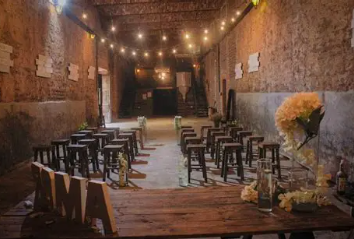
Visítanos y descubre nuestros vinos artesanales en un ambiente natural. Te esperamos para que vivas una experiencia única entre viñedos.
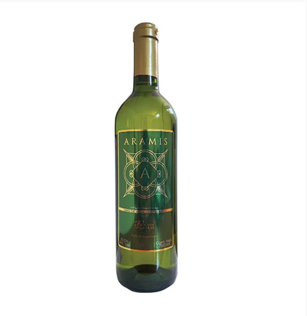
Variedad: Riesling - Chardonnay Tipo: Vino de Mesa Seco Blanco.
Grado de alcohol : 10.5%.
Vol.Region: Aguascalientes.
Descripción:
Vista: Fina tonalidad ámbar brillante.
Olfato: Intensidad media
Gusto: Esencia frutal cítrica con envolvente sensación astringente en boca y notas de lima. ligero en boca y con un agradable retrogusto , fresco y equilibrado y sin taninos persistentes.Recomendaciom de maridaje:excelentes en acompañamiento con pescado o marisco de sabores estructurados, pastas a base de mantequilla o ensaladas con trozos de queso fresco.
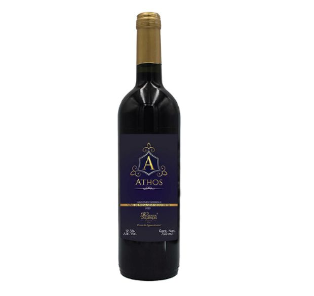
Variedad: Sangiovese - Nebbiolo Tipo: Vino de Mesa Semi Tinto.
Grado de alcohol : 12.5%.
Vol.Region: Aguascalientes.
Descripción:
Vista: Color purpura intenso, cuerpo redondo y equilibrado a la vista.
Olfato:Intensidad aromática media y carácter olfativo a frutas negras como grosella negra y ciruela pasa.
Gusto: Finos matices característicos del Nebbiolo , la frescura y sabores en armonia por el dulzor del Sangiovese. Recomendación de maridaje : Disfrútalo con brochetas de carne y pimiento morón,pastas con salsas sazonadas o enchiladas.
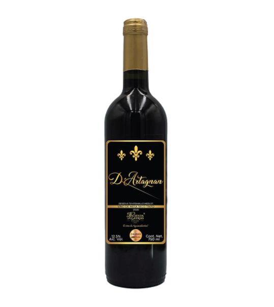
Variedad: Reserva Tempranillo - Merlot
Tipo: Vino de Mesa Seco Tinto.
Grado de alcohol: 12.5%.
Vol.Región: Aguascalientes.
Descripción
Vista:Profundos violáceos a la vista. Sedoso cuerpo aportado por su fina elaboración.Intenso grosella roja de capa alta, limpia y de cuerpo medio.
Olfato:Alta intensidad y carácter afrutado , predominan los frutos rojos , como zarzamora y ciruela.
Gusto:Predominan las notas de carácter fuerte , con un retrogusto de canela y tabaco y equilibrado.
Recomendación de maridaje:Ideal para acompañar con alimentos de carne roja preparados a la parrilla o en salsa,ternera y queso fuertes.
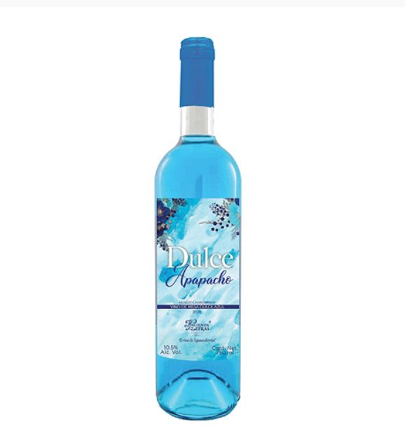
Variedad:Muscat - Chardonnay.
Tipo:Vino de Mesa Dulce Azul.
Grado de alcohol: 10.5%.
Vol.Región: Aguascalientes.
Descripción
Vista:Color Azul indigo brillante con reflejos y cuerpo medio.
Olfato:Intensidad aromática media , aroma frutales, durazno, pera y manzana.
Gusto:Delicados sabores de frutos del bosque como mora azul , zarzamora o melocotón. Sabor suave frutal con un recuerdo muy intresante en el retrogusto.
Recomendación de maridaje:Excelentes con Postres elaboradosa base de frutas como manzana , pera , durazno y limón. Buen Digestivo.
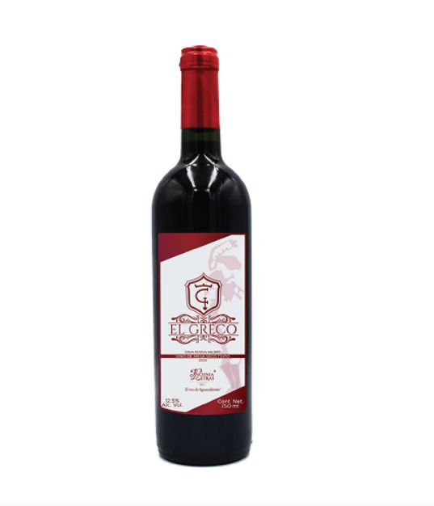
Variedad:Gran Reserva Malbec.
Tipo:Vino de Mesa seco Tinto.
Grado de alcohol: 12.5%.
Vol.Región: Aguascalientes.
Descripción
Vista:Atractivo color purpura con limpio ribete violáceos.
Olfato:Cuerpo apiñado que se percibe fácilmente con cuerpo medio.
Gusto:Predomina un carácter maduro de intensidad media que evolucionan a frutos como la ciruela negra y berries. Suave en boca, con un agradable sabor fresco y equilibrado.
Recomendación de maridaje:Excelente compañia de carnes magras, vegetales a la plancha y quesos espaciados y curados.
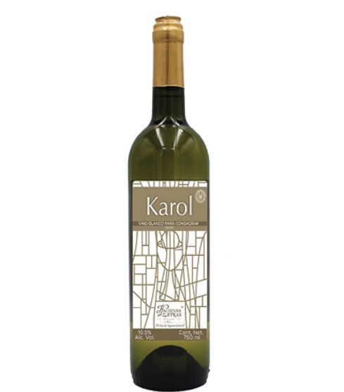
Variedad:Muscat Blanc.
Tipo:Vino de Mesa Dulce Blanco.
Grado de alcohol: 10.5%.
Vol.Región: Aguascalientes.
Descripción
Vista:Color Amarillo pajizo con ligeras tonalidades verdosas, limpio,brillante , y cuerpo medio.
Olfato:Olfato dulce y fresco con armónicas notas de manzana verde y pera.
Gusto:Dulce, afrutado con notas de manzana verde,pera y membrillo en boca.
Recomendación de maridaje:Buen acompañamiento con pollo ligeramente condimentado, cremas,ensaladas o Postres de queso con frutas y helado.Excelente como Digestivo.
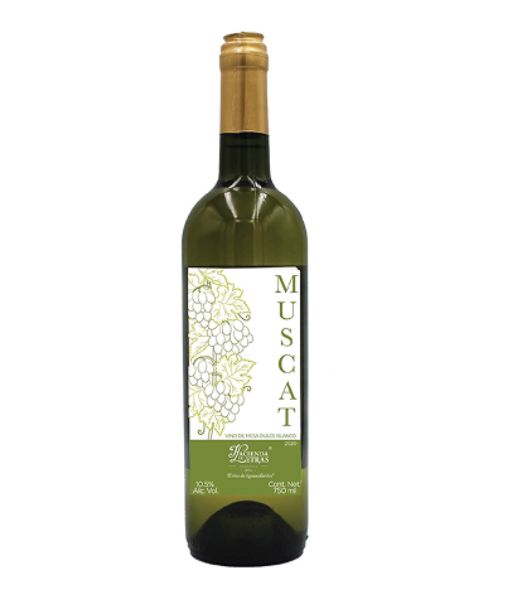
Variedad:karol.
Tipo:Vino Tinto Para Consagrar.
Grado de alcohol: 12%.
Vol.Región: Aguascalientes.
Descripción
Vista:Gran profundidas con tonos caoba y ribete granate.
Olfato:Refleja alta intensidad desde su aroma a frutos maduros negros y rojos.
Gusto:Ligero en boca y con un agradable retrogusto,fresco y Vino generoso de carácter intenso con marcadas notas a frutos rojos compotados que permanecen en boca.
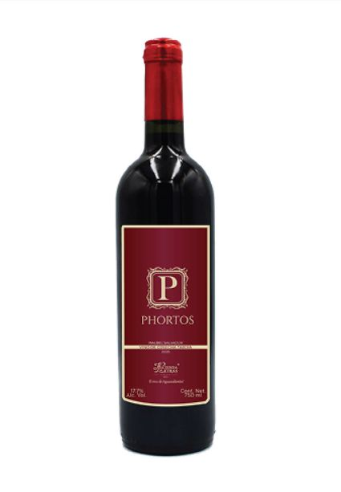
Variedad:Malbec - Salvador.
Tipo:Vino de Mesa Dulce Tinto.
Grado de alcohol: 17.7%.
Vol.Región: Aguascalientes.
Descripción
Vista:Color oscuro y profundo con tonos granate y cuerpo firme con textura sedosa.
Olfato:Elegante e intensos aromas adquiridos durante su elaboración.
Gusto:Vigroso dulzor con permanencia cálidad en paladar.
Recomendación de maridaje:Excelente vino digestivo para acompañarse con tartas de frutas y postres selectivos
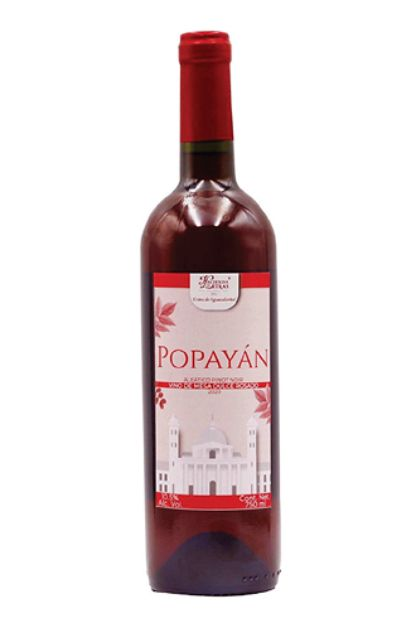
Variedad:Aletico - Pinot.
Tipo:Vino de Mesa Semi Dulce Rosado.
Grado de alcohol: 10.5%.
Vol.Región: Aguascalientes.
Descripción
Vista:Vino de color brillante salmón,con cuerpo medio.
Olfato:Predomina la intensidad aromática afrutada y tropical . carácter olfativo fresco.
Gusto:Suave en boca, con exóticos toques de fruta del dragon,mango y durazno.Agradable sabor fresco y equilibrado.
Recomendación de maridaje:Disfrútalo acompañado de ensaladas, ceviche, sushi, salmon, tarta de frutas y quesos suaves
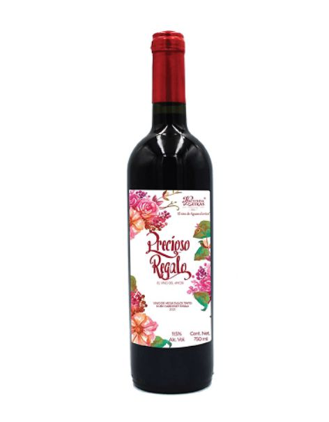
Variedad:Ruby Cabernet-Syrah.
Tipo:Vino de Mesa Dulce Tinto.
Grado de alcohol: 11%.
Vol.Región: Aguascalientes.
Descripción
Vista:Intenso color escarlata con destellos brillantes, rojo intenso con tonos limpios, de cuerpo medio.
Olfato:Aromas florales y olfativo dulce y afrutado.
Gusto:Gusto jovial de frutos rojos como cereza, grosella y arándanos.
Recomendación de maridaje:Disfrutalo en cualquier ocasión, recomendado para postres con chocolate amargo o dulce y con frutos rojos.
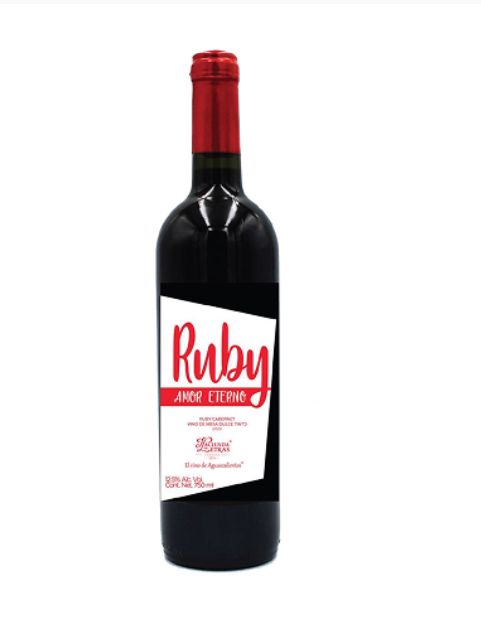
Variedad:Ruby Cabernet.
Tipo:Vino de Mesa Semi Dulce Tinto.
Grado de alcohol: 12.5%.
Vol.Región: Aguascalientes.
Descripción
Vista:Elegante color rojo, granante muy intenso con tonos rubí de capa alta, limpio y de cuerpo medio.
Olfato:Intenso olor afrutado con toque de ciruela.
Gusto:Gusto dulce que evoca a frutos rojos y provoca una experiencia excepcional en la boca.
Recomendación de maridaje:Ideal para acompañarse con platillos típicos de gastronomía mexicana; ademas de postres de chocolate, frutos del bosque y nueces.
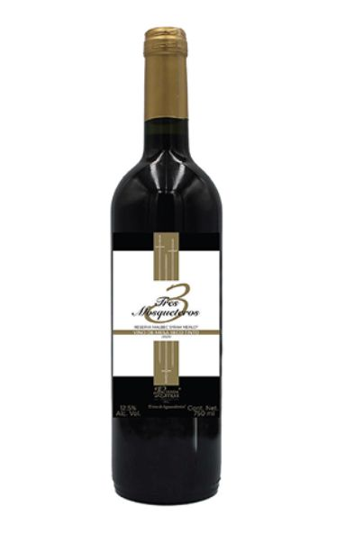
Variedad:Reserva Malbec - Syrah - Merlot.
Tipo:Vino de Mesa Seco Tinto.
Grado de alcohol: 12.5%.
Vol.Región: Aguascalientes.
Descripción
Vista:tonalidades caoba, con cuerpo untoso adquirido durante su proceso de crianza.
Olfato:Completa composición de frutos rojos maduros, finas maderas europeas, regazo y cacao.
Gusto:carácter fuerte, cuerpo seco y alto. Cuenta con estructurada tanicidad característica del ensamble, Frutos rojos maduros y finas maderas.
Recomendación de maridaje:Buen acompañamiento para cortes finos de carnes rojas, platillos espaciados, quesos madurados y carnes frías curadas.
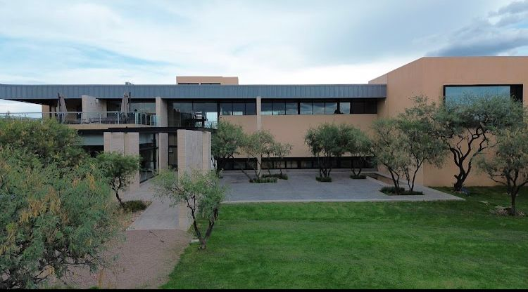
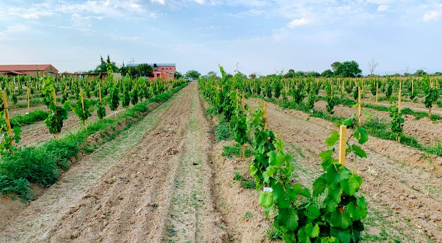
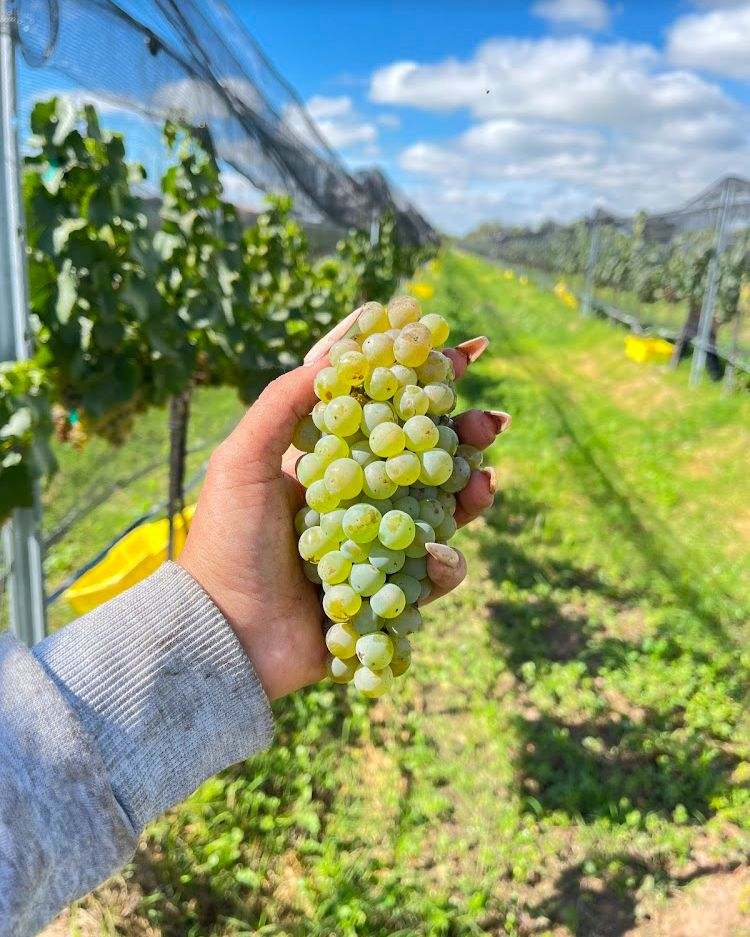
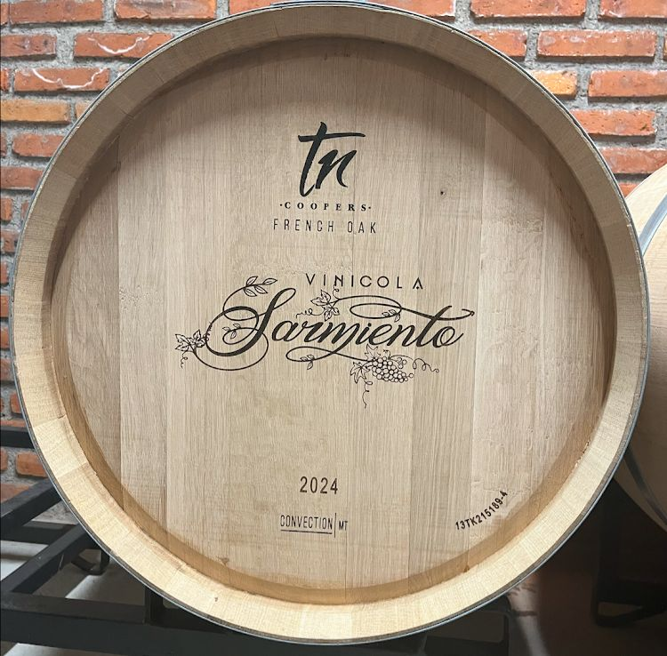
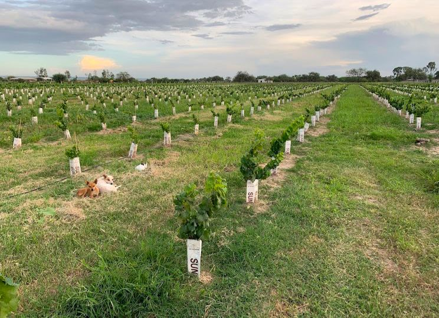